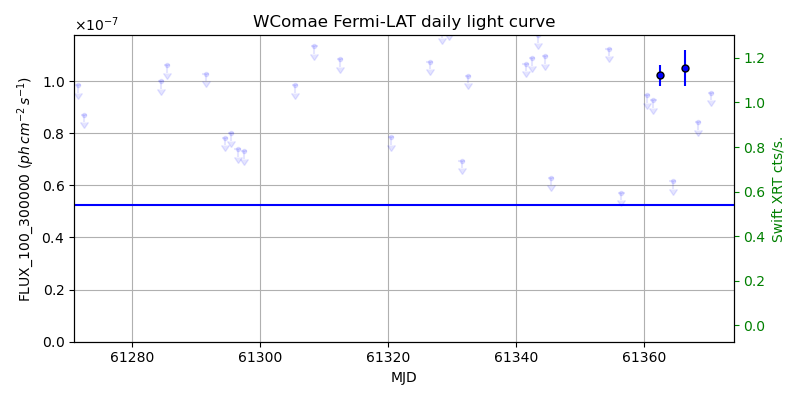
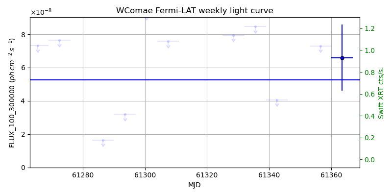
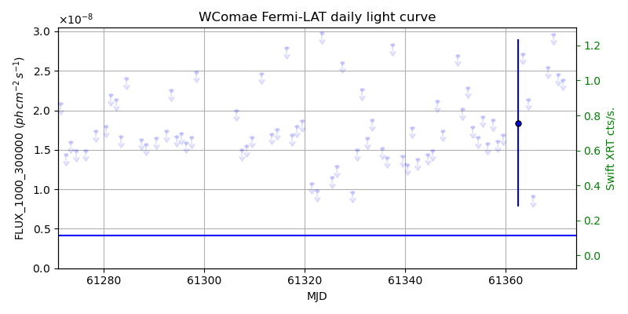
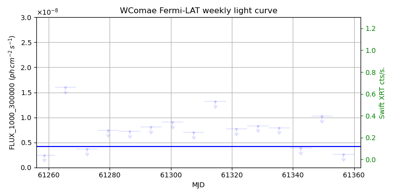

LAT Lightcurve site: https://fermi.gsfc.nasa.gov/ssc/data/access/lat/msl_lc/source/W_Comae
Swift site: https://www.swift.psu.edu/monitoring/source.php?source=WCom
NED: Query
Time of last update of this page: UT: 2026-11-28 16:24 (MJD: 61372.684)
| Property | Value |
|---|---|
| R.A. | 12:21:31.68 |
| Dec. | 28:13:58.8 |
| z | 0.102 |
| 3FGL SpectrumType | PowerLaw |
| 3FGL PL Index | 2.10 |
| 3FGL Flux_100_300000 | 5.25e-08 1 / (s cm2) |
| 3FGL Flux_1000_300000 | 4.14e-09 1 / (s cm2) |
| 3FGL Flux >200 GeV | 1.20e-11 1 / (s cm2) |
| 3FGL Extrap. Crab >200 GeV | 0.05 |
| 3FGL Flux After EBL Absorption >200GeV | 7.75e-12 1 / (s cm2) |
| 3FGL EBL Crab Fraction >200GeV | 0.03 |

| MJD | dMJD | Flux | dFlux | Frac3FGL | FracCrab>200GeV | EBLFracCrab>200GeV |
|---|---|---|---|---|---|---|
| 61367.50 | 0.50 | 2.90e-07 | 0.00e+00 | 0.00 | 0.00 | 0.00 |
| 61368.50 | 0.50 | 8.43e-08 | 0.00e+00 | 0.00 | 0.00 | 0.00 |
| 61369.50 | 0.50 | 1.25e-07 | 0.00e+00 | 0.00 | 0.00 | 0.00 |
| 61370.50 | 0.50 | 9.55e-08 | 0.00e+00 | 0.00 | 0.00 | 0.00 |
| 61371.50 | 0.50 | 2.93e-07 | 0.00e+00 | 0.00 | 0.00 | 0.00 |

| MJD | dMJD | Flux | dFlux | Frac3FGL | FracCrab>200GeV | EBLFracCrab>200GeV |
|---|---|---|---|---|---|---|
| 61335.50 | 3.50 | 8.47e-08 | 0.00e+00 | 0.00 | 0.00 | 0.00 |
| 61342.50 | 3.50 | 4.07e-08 | 0.00e+00 | 0.00 | 0.00 | 0.00 |
| 61349.50 | 3.50 | 1.30e-07 | 0.00e+00 | 0.00 | 0.00 | 0.00 |
| 61356.50 | 3.50 | 7.30e-08 | 0.00e+00 | 0.00 | 0.00 | 0.00 |
| 61363.50 | 3.50 | 6.60e-08 | 1.99e-08 | 1.26 | 0.06 | 0.04 |

| MJD | dMJD | Flux | dFlux | Frac3FGL | FracCrab>200GeV | EBLFracCrab>200GeV |
|---|---|---|---|---|---|---|
| 61367.50 | 0.50 | 3.26e-08 | 0.00e+00 | 0.00 | 0.00 | 0.00 |
| 61368.50 | 0.50 | 2.54e-08 | 0.00e+00 | 0.00 | 0.00 | 0.00 |
| 61369.50 | 0.50 | 2.96e-08 | 0.00e+00 | 0.00 | 0.00 | 0.00 |
| 61370.50 | 0.50 | 2.45e-08 | 0.00e+00 | 0.00 | 0.00 | 0.00 |
| 61371.50 | 0.50 | 2.39e-08 | 0.00e+00 | 0.00 | 0.00 | 0.00 |

| MJD | dMJD | Flux | dFlux | Frac3FGL | FracCrab>200GeV | EBLFracCrab>200GeV |
|---|---|---|---|---|---|---|
| 61335.50 | 3.50 | 7.93e-09 | 0.00e+00 | 0.00 | 0.00 | 0.00 |
| 61342.50 | 3.50 | 3.89e-09 | 0.00e+00 | 0.00 | 0.00 | 0.00 |
| 61349.50 | 3.50 | 1.02e-08 | 0.00e+00 | 0.00 | 0.00 | 0.00 |
| 61356.50 | 3.50 | 2.59e-09 | 0.00e+00 | 0.00 | 0.00 | 0.00 |
| 61363.50 | 3.50 | 7.68e-09 | 2.71e-09 | 1.86 | 0.09 | 0.06 |
--------------------------------------------------------- Using user-supplied coords: 12:21:31.68 28:13:58.8 2000 --------------------------------------------------------- FLWO UT night of: 2026-11-29 Local Sid. @ Midnight: 04:08 Sunset (-15.0) (local, UT): 18:31 01:31 Sunrise (-15.0) (local, UT): 05:53 12:53 Moonrise (local, UT): 21:57 04:57 Moonset (local, UT): Moon phase: 0.72 --------------------------------------------------------- AzTime LSID UT Obj_el Obj_az Mn_el Mn_az Sep. --------------------------------------------------------- 18:31 22:39 01:31 -25.4 334.8 -32.9 32.1 50.0 19:01 23:09 02:01 -27.7 341.7 -29.4 38.9 49.7 19:31 23:39 02:31 -29.4 349.0 -25.4 45.0 49.4 20:01 00:09 03:01 -30.2 356.6 -21.0 50.6 49.1 20:31 00:39 03:31 -30.1 4.3 -16.2 55.6 48.8 21:01 01:09 04:01 -29.2 11.8 -11.1 60.2 48.5 21:31 01:39 04:31 -27.5 19.1 -5.4 64.5 48.3 22:01 02:09 05:01 -25.0 26.0 0.4 68.5 48.0 22:31 02:39 05:31 -21.9 32.4 5.8 72.2 47.8 23:01 03:10 06:01 -18.2 38.2 11.6 75.8 47.5 23:31 03:40 06:31 -14.0 43.6 17.5 79.4 47.3 00:01 04:10 07:01 -9.4 48.5 23.6 82.9 47.1 00:31 04:40 07:31 -3.0 52.9 29.7 86.5 46.9 01:01 05:10 08:01 1.2 57.0 35.8 90.3 46.7 01:31 05:40 08:31 6.4 60.7 42.0 94.4 46.6 02:01 06:10 09:01 12.0 64.2 48.1 99.1 46.4 02:31 06:40 09:31 17.8 67.5 54.2 104.7 46.3 03:01 07:10 10:01 23.8 70.6 60.1 111.7 46.1 03:31 07:40 10:31 29.9 73.5 65.6 121.1 46.0 04:01 08:10 11:01 36.0 76.4 70.5 134.7 45.9 04:31 08:40 11:31 42.3 79.2 74.0 154.7 45.8 05:01 09:11 12:01 48.6 82.1 75.2 181.1 45.6 05:31 09:41 12:31 55.0 85.2 73.6 206.8 45.5 05:53 10:02 12:53 59.6 87.6 71.0 221.2 45.5 --------------------------------------------------------- Dark hours >55 deg.: 0.00